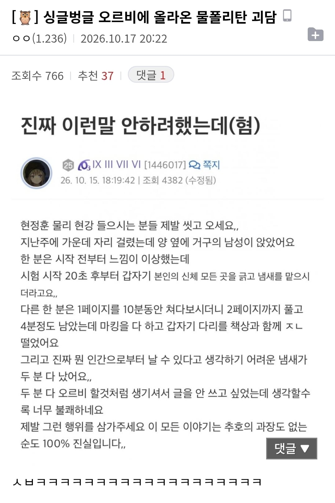

저게 괴담이 아니라 물리화학 하는 애들은 진짜 저런 애들이 있음

저게 괴담이 아니라 물리화학 하는 애들은 진짜 저런 애들이 있음
미필한테 화생방은 너무 버겁다
우리땐 쿨뷰티 미녀도 물,화했다
이 글 올린 앤 허수고 저 냄새 나는 애는 서울대 무난하게 뚫을 듯
서울대 화학물질
닉 보라색인 애들은 평가원 시험 평백99프로임
수험생임? 별걸 다 아네
오르비라는 커뮤니티 특성상 수험생기간 지나면 거의 안하게되던데
작년에 재수하고 올해 과외하느라 오르비 가끔 감
개드립에 20대 초반이 있단말이냐!!!
좋은대학 갔는데 대학생활은 적응 못하는 애들이 오르비뽕에서 못 빠져나와서 대학 가서도 계속하더라
냄새는 진짜 어쩔수 없어..
과학고 다닐때 냄새 거구들은 생물했는데ㅋㅋ
ㅅㅂ 너글쪽 계열 컬티스트들인가
시대인재 '부남'
부남부남아...
캬.. 집중력향상되겟네..스팀팩이지뭐 경쟁사회에